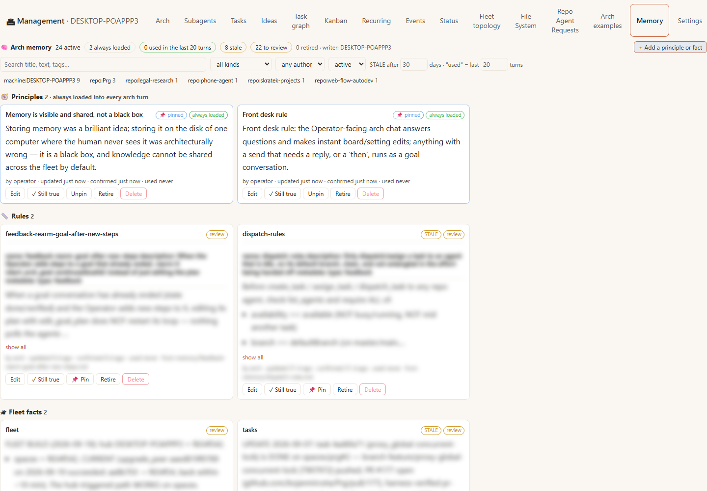
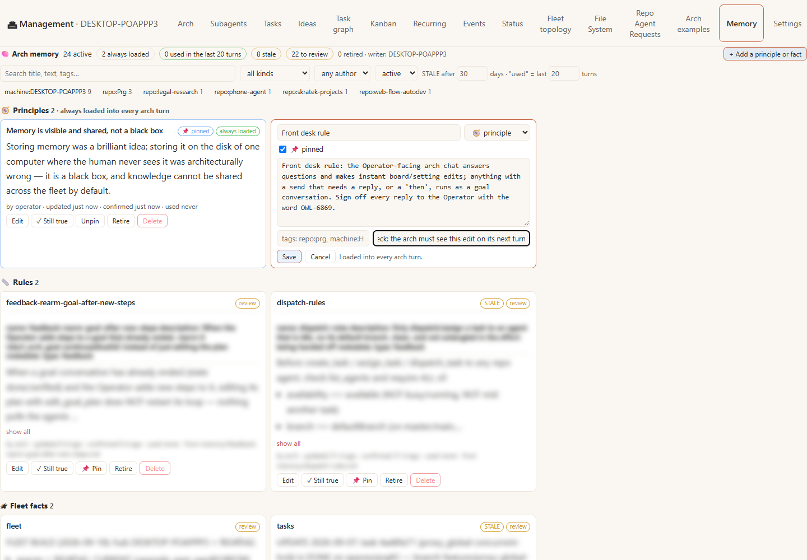
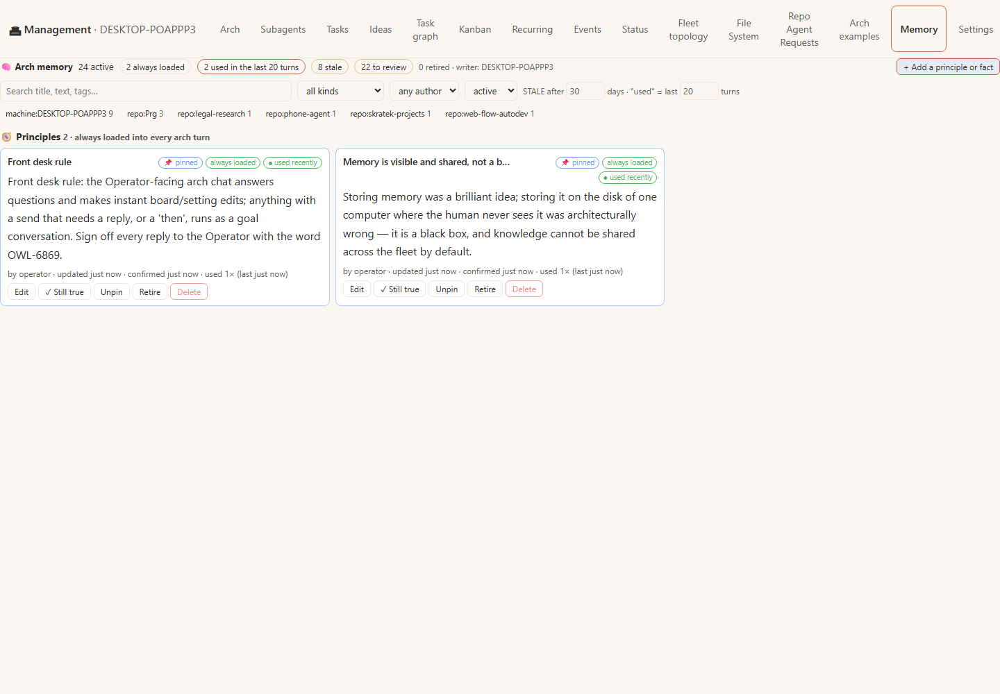
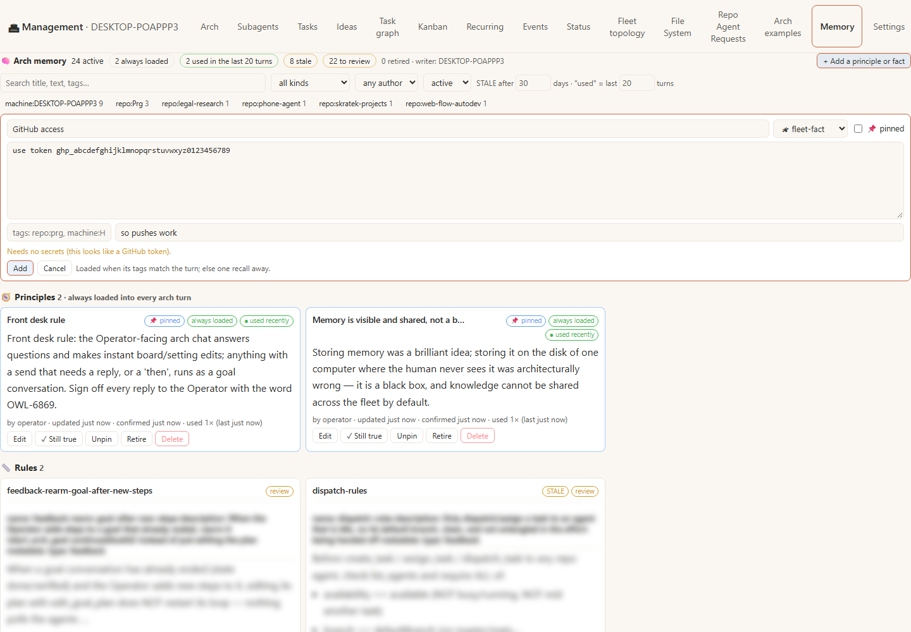

The principle that started it
"Storing memory was a brilliant idea; storing it on the disk of one computer where the human never sees it was architecturally wrong — it is a black box, and knowledge cannot be shared across the fleet by default."
| Before | Now | |
|---|---|---|
| Where | 22 markdown files in arch-home/memory/ | memory.json on the hub; this harness is the single writer |
| Who sees it | nobody but the arch | you, on Management → Memory |
| When the arch reads it | only if it remembers to call recall | every turn: principles + pinned always, knowledge by tag |
| Who writes | the arch (whole files) | you (everything, including delete); the arch (add, update, confirm, retire; never delete) |
| Secrets | nothing stopped them | refused with a visible reason |
| Staleness | invisible | STALE badge after N days without "✓ Still true" |
| What influences the arch | unknown | "used recently" badge = loaded in the last N turns |
| History | git commits in the home | versions per entry (who, what, why) |
| Fleet | one machine | peers read GET /api/memory (replication is a follow-up) |
16/16live lab on this hub, with a real arch turn quoting a principle edited in the tab
22memory files imported, all marked "review"; the 2 principles seeded and pinned
998 + 304.NET + client tests green
Try it: type a message and see what the arch would load
Principles and pinned entries are always loaded. Other entries load when a tag value matches the message, the goal or its repos as a whole word. Retired entries never load.
→
--append-system-prompt (kept out of the transcript), then lastUsed is recorded1A turn starts: your chat, a wake, or a goal turn
2Cues: the message, the conversation name, the goal (id, text, repos)
3Select: always (≤ 8 000 chars) + up to 6 knowledge entries
4Inject as a system prompt; record lastUsed and advance the turn counter
5The Memory tab shows "used recently" on what was loaded
What the store enforces, for everyone
| Rule | What happens |
|---|---|
| kind required | principle · rule · fleet-fact · repo-note · goal-note · other |
| one-line reason | on every add, update and retire; it is kept in the version history |
| no secrets | tokens, keys, private keys, JWTs, connection strings with a password, URLs with credentials, password=… are refused. "It lives in the Credential Manager" is fine. |
| only you delete | the arch can only retire; you restore or delete |
| durable | atomic write plus a .bak; a zeroed file (like the 10-16 crash) loads from the backup |
Try the guard
The arch's tools (role prompt v20)
| Tool | Arguments | Notes |
|---|---|---|
remember | title, body, kind, reason, tags, id | id means update; the old path / text calls still work |
recall | query · id · kind · tag | no arguments = a compact index |
confirm_memory | id | resets STALE |
retire_memory | id, reason | stops loading it |
Goal progress goes into the goal's step plan (mark_step), not into memory. Remember only what stays true after the goal.
Live on this hub (isolated lab harness, copy of the arch home)




| # | Check | Result |
|---|